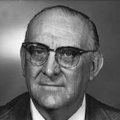

Otto Herbert Arnold Schmitt (1913-1998) était un ingénieur et scientifique américain, pionnier dans le domaine de l'électronique.Il est surtout connu pour avoir inventé le Schmitt Trigger, un circuit électronique utilisé dans les circuits logiques pour convertir des signaux analogiques instables en signaux numériques précis. Inspiré par des mécanismes biologiques, il a conçu des dispositifs révolutionnaires qui ont marqué l'électronique moderne et influencé de nombreux domaines scientifiques. Otto Schmitt a laissé un héritage durable avant de s’éteindre en 1998.